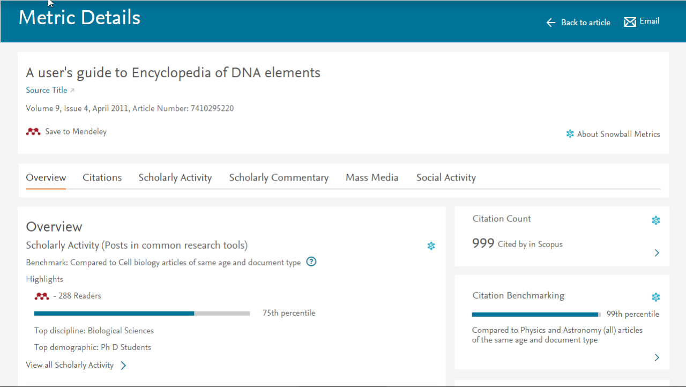
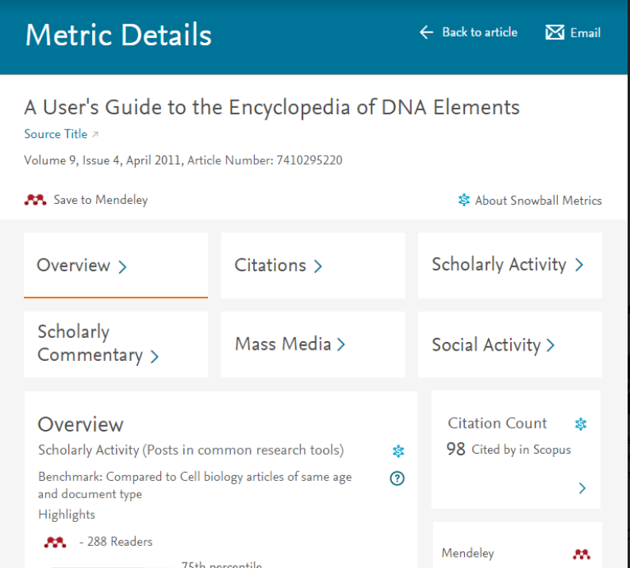
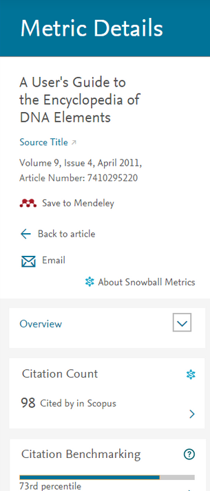
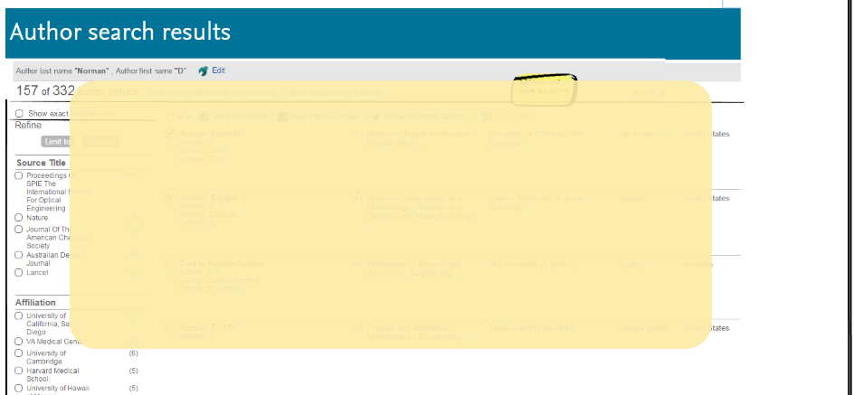
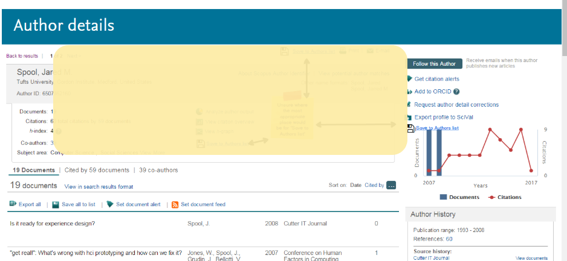
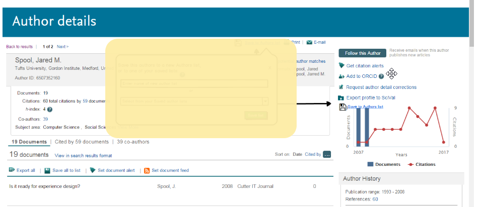
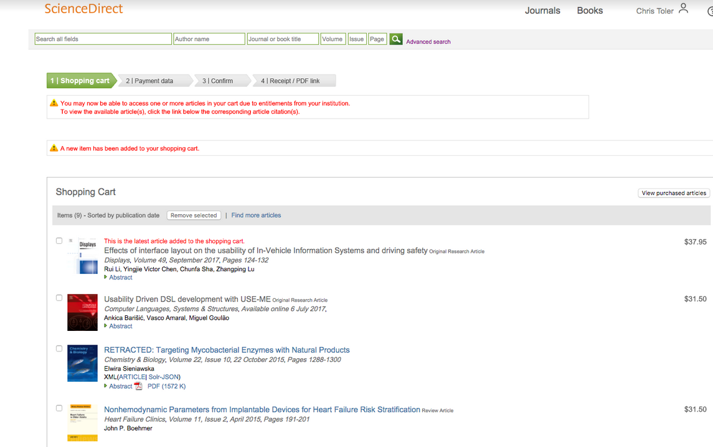
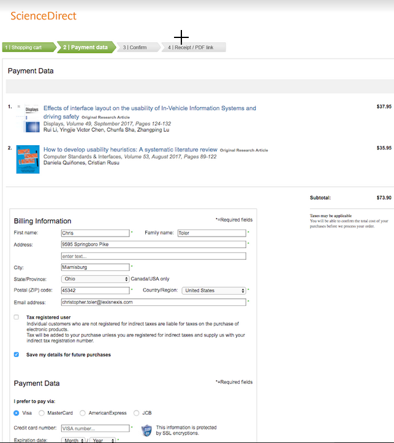

Interaction Design
When designing any user experience, I think it is most useful to begin with low-fidelity (paper and pencil) and begin collecting user feedback as soon as possible. What is important is understanding user expectations. What do they expect to be able to do with the product? What is essential? What would delight them, and what do they not care at all about?
As we learn that, we can begin to learn about the interaction, how they expect to use it and where they expect to use it. The quicker we learn, the quicker we arrive at solid designs, reducing the likelihood of expensive, hard-to-fix usability problems late in development.
So of course, user understanding, design and testing are all indispensible.
Altmetrics
Evaluating quality of research involves the use of metrics. Readership, number of publications, etc., all weigh in to the relative quality of a researcher's output. A newer metric of research involves 'altmetrics' which are metrics derived from such things as social media discussion, posts, tweets, etc. As with traditional types of metrics (e.g., citations), these provide some indication as to the quality of an author's output. The UI for how to present altmetrics was one which I designed and delivered.
An existing altmetric page existed when I took on the project. While the layout was shown to be usable, some of the content was jumbled in the left panel. Also we needed to provide a responsive design. Below are screenshots of various layouts (desktop, tablet and phone). Each 'card' from the overview page could be clicked on to get details on that particular metric page.
The same content was shown for desktop, tablet and phone. I took care to ensure that the clickable object was large and separated from nearby objects on the phone. A dropdown was used on the phone to navigate between different metrics.

Desktop view of Altmetrics web page

Tablet view of Altmetrics web page

Phone view of Altmetrics web page
In addition to the main altmetric pages, the side tab was considered insufficient. There were metrics that were not shown and the order was not predictable. Lastly we needed to design a way to display cards that could be shown on an article page such that the owner of the product providing the article could customize where on the page the cards would be shown.
The number of metrics (cards) that might be displayed would not exceed 16. If there were no data for a given metric, it would not appear. Thus the number of cards would vary from one to 16.
Save Authors to List
Researchers love short-cuts to help them conduct search and keep track of favorite authors and competitors. One feature I designed was a way to enable researchers to create list of 'favorite authors' in a major Elsevier product.
This way, whenever a researcher on their list, publishes a new article, the user will become aware and can not only view the paper, but assess the number of citations, metrics and other critical data for that author.
This feature has not been created on the site, so some of the UI and flow still needs to be concealed in the screen images below.




ScienceDirect Pay-per-view
One of the key features developed for ScienceDirect was the pay-per-view feature for which I was responsible. This was a feature that would allow users who were not subscribed to a specific journal through their university, to purchase a specific article while on ScienceDirect.
This required creating a shopping cart within which users could add up to 20 articles. Users could purchase no more than 20 articles per 24-hours (for internal reasons). Upon completion of the purchase, articles were then downloaded. Below is a screenshot of the funnel.
This pay-per-view feature has since been redesigned within ScienceDirect.

Pay-per-view shopping cart

Pay-per-view payment screen